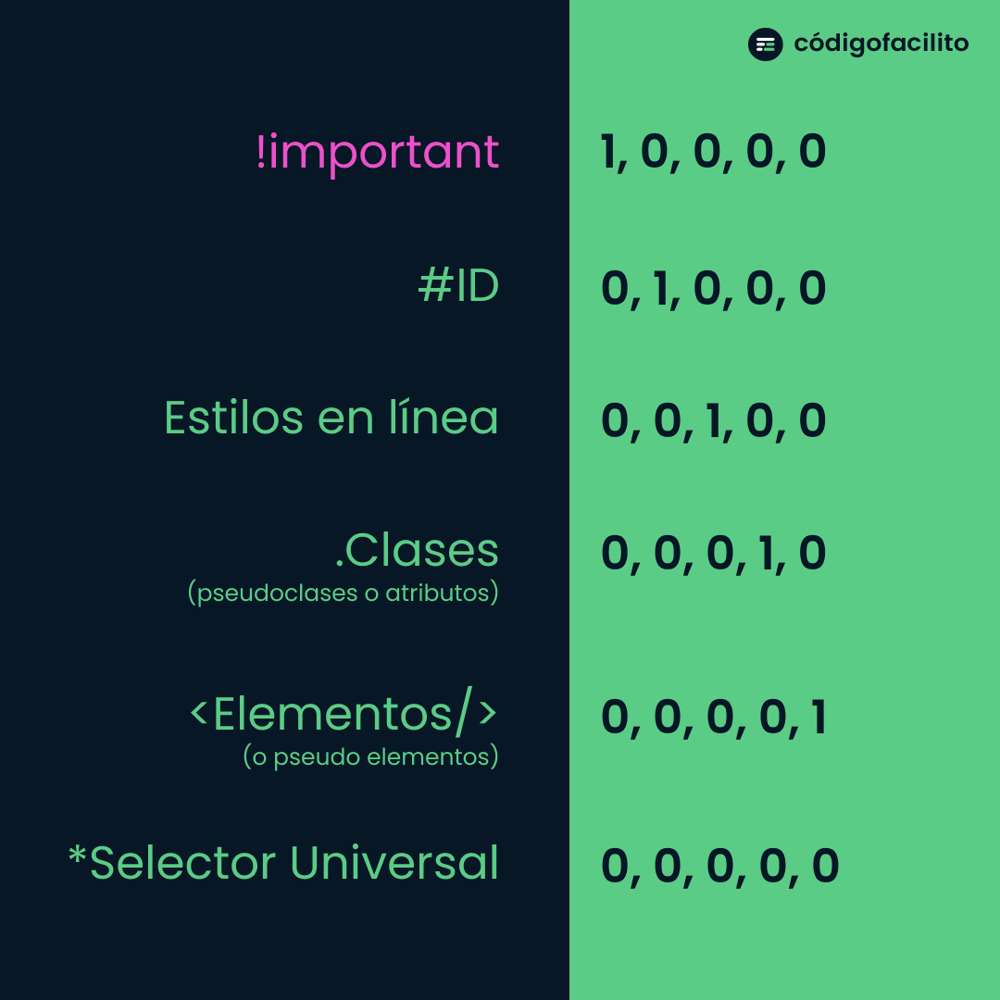

Basado en los conceptos clave de CódigoFacilito. El navegador calcula un puntaje matemático representado en columnas para determinar qué regla CSS tiene prioridad absoluta.
Esquema visual de pesos por selector (de !important hasta el selector universal).

No es un selector en sí, sino una directiva que fuerza la aplicación de una regla de estilo por encima de cualquier cálculo de especificidad normal.
Cada identificador único aporta un peso considerable en la segunda columna. Son muy difíciles de anular a menos que se use otro ID o !important.
Aplicados directamente en la etiqueta HTML mediante el atributo style="". Superan a clases y selectores de elementos internos.
Incluye clases (.clase), pseudo-clases (:hover, :focus) y selectores de atributos. Ideales para modularizar.
Selectores de etiquetas HTML directas (p, h1, div) y pseudo-elementos (::before, ::after).
El asterisco selecciona cualquier elemento sin aportar peso adicional en el algoritmo de especificidad del navegador.